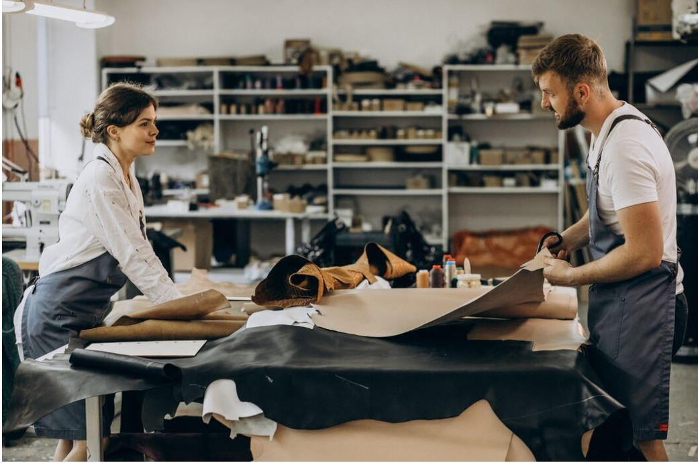

TELAS
Microfibras - cuero sintetico - Tipo lona
La importancia del corte de telas en el mueble tapizado
El corte de telas es una etapa clave en la fabricación de muebles tapizados, ya que influye directamente en la apariencia final, el ajuste y la durabilidad del tapizado. Un corte preciso garantiza que las piezas encajen perfectamente sobre la estructura y los rellenos, logrando un acabado limpio, profesional y uniforme.
Antes de cortar, es fundamental realizar una correcta planificación del diseño y el trazado. Se deben tener en cuenta factores como el tipo de tela, su dirección, el sentido del hilo, los estampados y el estiramiento. Un mal corte puede provocar desperdicio de material, costuras fuera de lugar, arrugas o deformaciones.
Además, una distribución eficiente sobre la tela permite optimizar su uso, reduciendo costos y mejorando el rendimiento del taller. Las piezas deben ser marcadas y cortadas con herramientas adecuadas, manteniendo márgenes de costura constantes y cuidando los detalles.
En resumen, el corte de telas no es solo una tarea técnica, sino una parte esencial del proceso artesanal que asegura estética, funcionalidad y calidad en el mueble final. Un buen corte marca la diferencia entre un mueble común y uno verdaderamente bien terminado.